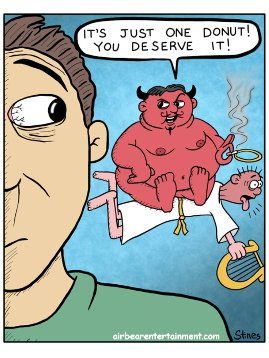

--Client
"I hear in many places that when the truth of my own nature is seen, there’s no ‘me’ left – therefore no ‘me’ to quit smoking!"
--Anonymous
"All who make idols are nothing."
--Isaiah 44:9
I once worked with someone who specialized in helping people with addictions. This person’s own drug addiction had fallen away, and it appeared from the outside they had beaten cravings in general, enough to attempt to help others do the same.
Meanwhile they were stealth-cruising public parks for anonymous sex at every possible opportunity.
Their addictions lived on.
Along with secrecy, fear of consequences, shame, and self-hatred.
They weren’t alone though. Pretty much every human individual is addicted to something, and often to many somethings.
And like my former colleague, it may not be as obvious as pills or vodka; it can just as easily be sex, shopping, big feelings like fear or anger, or the hunt for enlightenment.
Most folks have their favorite theory about cause.
There’s the “filling a void” theory, the “reaction to past trauma” theory, the “avoiding feelings” theory, the “neurological problem or chemical imbalance” theory. Or it’s lack of presence, not mindful enough.
These theories can be combined, or mixed and matched.
Most don’t call them theories though. Usually we are absolutely certain about our favorite explanation, often citing sources of well-credentialled other absolutely certain people.
You’d think with all that total certainty about addiction, that it ought to be easily stopped, fixed, and a thing of the past.
But no. Most addictions do not actually end.
Despite all the favorite cures or solutions too. Despite the therapy, inquiry, ayahuasca ,treatment centers, 12 steps, meditation, and the sitting with feelings. And let’s not forget enlightenment, which is supposed to make flawed behaviors such as addiction simply vanish. (For those hopeful true believers, let’s be clear this is not true. On the contrary, addictions often get stronger. See Krishnamurti, Nisargadatta, Watts, Mooji.)
So isn’t it funny that in our minds, we call compulsion a pleasure, a treat, reward, relief.
While at the same time busily trying very hard to stop said reward.
Bargaining with “Just one glass.” Having the inevitable internal discussion about moderation rather than complete elimination. Landing eventually on all or nothing, and not being trusted to keep chips in the house.
One thing we’re sure of. We’re responsible. There’s a whole lot of personal choice involved.
Ok, bad choice, but still.
This behavior must stop and it’s up to us to stop it.
Hmm. The self is mighty powerful, no? Considering it can’t prevent itself from opening a beer?
Look at us. We are The Doer!
Doing bad.
Bad us.
Misery follows. Guilt, failure, hopelessness.
That’s some treat.
It turns out that somewhere along the way, “I deserve this pleasure” turns into, “This is all I deserve, this self hatred and heaviness which follows the indulgence.”
Because despite what the mind tells us in the throws of a craving, addiction is not a reward.
It is a punishment.
For believing we are a person. A not-productive-enough person, a not-kind person, a failure-in-life-and-love person, a selfish or angry person.
A bad person.
Which is what persons are.
The self is inherently inadequate.
This is not ok.
Well, according to the self.
That’s why almost everyone experiences addiction.
It confirms the sense of self, while giving mind a project.
Which is why quitting just may not be up to us.
Because despite what it says, no matter how convincingly, mind/thought/ego has no desire to change a thing.
And personal responsibility may not exist.
And weird as this may sound when we’ve all had lifetimes of indoctrination about our empowerment and ownership of consequences,
it could be that accepting our complete lack or power with regard to addiction,
sidesteps the mind trying to solve its own problems.
Because the mind’s only way is to punish.
Not stop.
Meanwhile, taking the solutions out of our obviously powerless hands can lighten the sense of being a person at all.
Which, it turns out, is what so many seekers actually seek.
And may even provide the feeling, the happiness and peace, that we were hoping to find in the ice cream, the bottle, the new furniture, to begin with.
Powerlessness can be mighty sweet.
Non-personhood can be light.
We might even get high on it.
And who knows? That just might be
the ultimate treat.
Want to watch Judy's Buddha At The Gas Pump interview? click here
12-step #1: Admitted we were powerless.
"God was full of Wine last night, so full of wine that He let a great secret slip.
He said: There is no man on earth who needs a pardon from Me-
For there is really no such thing, no such thing as sin!
That Beloved has gone completely wild . He has poured Himself into me!
I am blissful and drunk and overflowing.
Dear world, draw life from my sweet body,
Dear wayfaring souls, come drink your fill of liquid rubies,
For God has made my heart
An Eternal Fountain!"
--Hafiz
